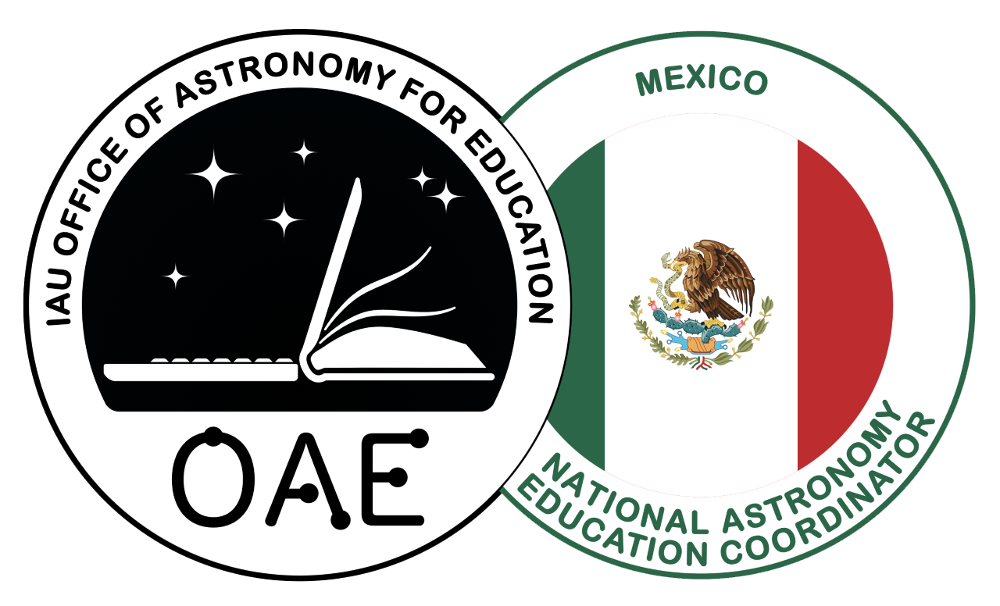
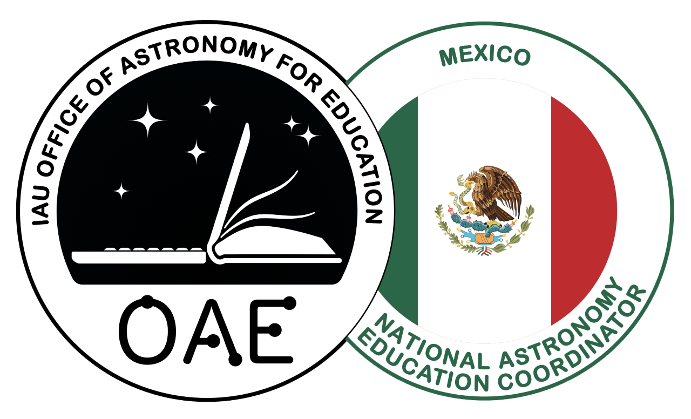
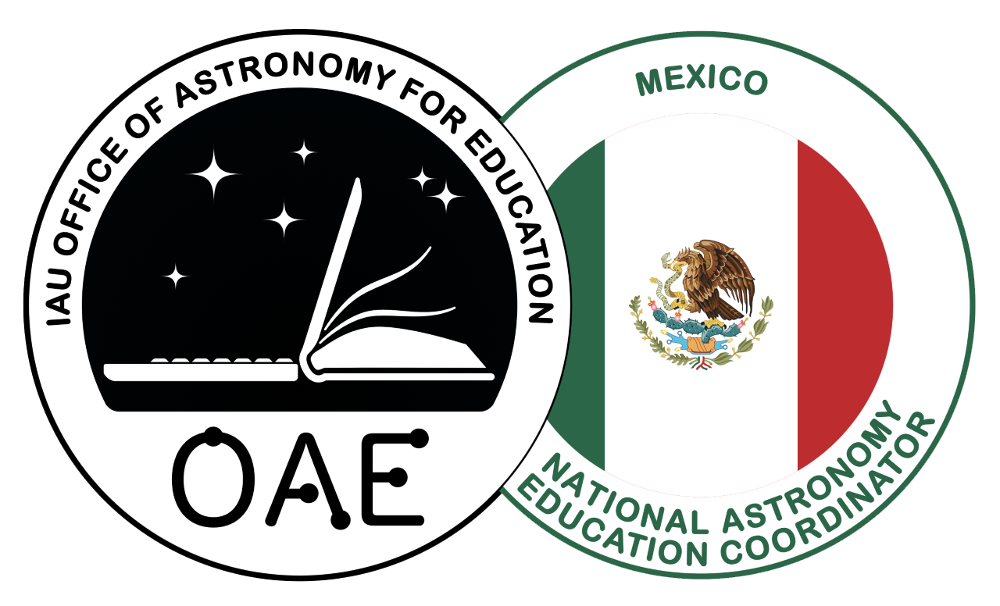
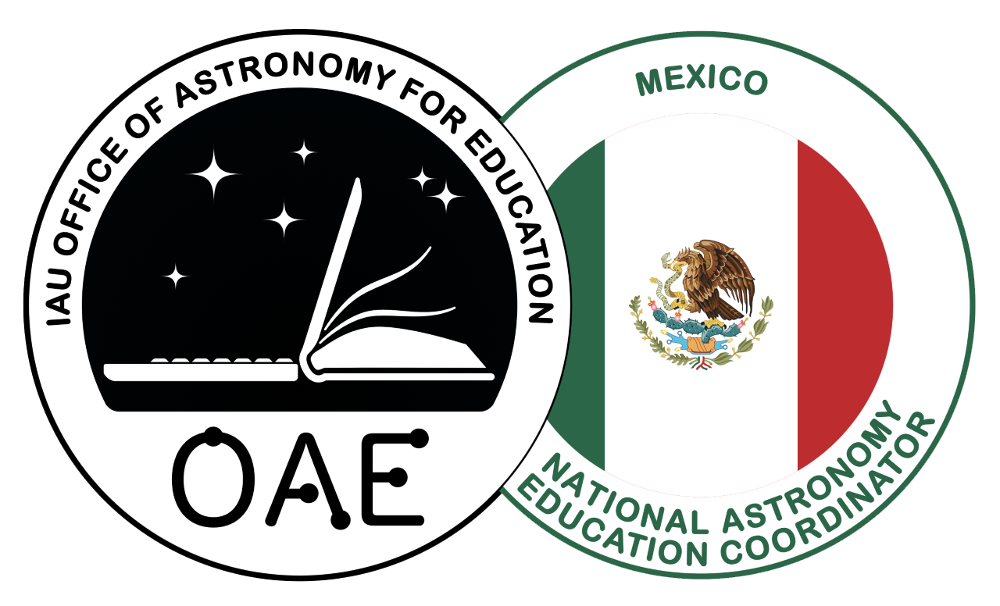

Día internacional de los Asteroides
 



La Tierra es impactada por unas 16 toneladas de meteoritos anualmente, sin embargo, la mayoría de estos es solamente de unos cuantos gramos de peso y usualmente pasan desapercibidos. En algunas ocasiones estos objetos pueden alcanzar un tamaño considerable y causar fuertes impactos sobre la superficie terrestre, tal es el caso de aquel que impactó contra la Tierra hace 65 millones de años. Uno de los impactos recientes más importantes sucedió el 30 de junio de 1908, cerca del rio Podkamennaya en Tunguska, Siberia una fuerte explosión equivalente a 300 bombas atómicas que arrazó un area de 2 mil 150 kilometros cuadrados.
Es gracias a este evento que el 6 de diciembre de 2016, la Asamblea General de las Naciones Unidas aprobó la resolución A/RES/71/90, en la que se declara el 30 de junio el Día Internacional de los Asteroides. Se declaró con el fin de sensibilizar al público sobre los riesgos del impacto de asteroides e informar sobre las medidas de comunicación en caso de crisis que se adoptarían en todo el mundo si hubiera una amenaza verosímil de impacto de un objeto cercano a la Tierra.

El pasado 30 de junio de 2023 se llevaron a cabo difrentes actividades con motivo del día del asteroide. Estas actividades tuvieron lugar en la facultad de ciencias Físico Matemáticas de la Benemérita Universidad Autónoma de Puebla, el Instituto Nacional de Astrofísica, Óptica y Electrónica y la Alianza Francesa.

El cronograma para es día fue dividido en cuatro partes, una mesa redonda con Investigadores del INAOE, un dialogo estudiantil con alumnos de la BUAP, la inauguración de la exposición fotografica "Un viaje visual de la mano del principito" y concluyendo con observaciones de asteroides en la cámara Schmidt, Tonanzintla.

Para el día de los asteroides del 2024 se realizarán diferentes actividades con apoyo del museo de la evolución Puebla, el cual nos permitirá presentar diferentes talleres interactivos, exhibiciones y telescopios dentro de sus instalaciones. Este 30 de junio las actividades se realizarán en el mismo horario que el funcionamiento normal del museo, es decir, desde las 9:00 a.m. hasta las 6:00 p.m.
Como parte de las actividades organizadas por el INAOE, la Alianza Francesa Puebla y la FCFM BUAP por el DíadelAsteroide, en el Museo de la Evolución tendremos esta charla impartida por la Dra. Karina Elizabeth Cervantes de la Cruz. 30 de junio. 13h. Auditorio del Museo. ¡Allá nos vemos! Entrada libre a todas las actividades.